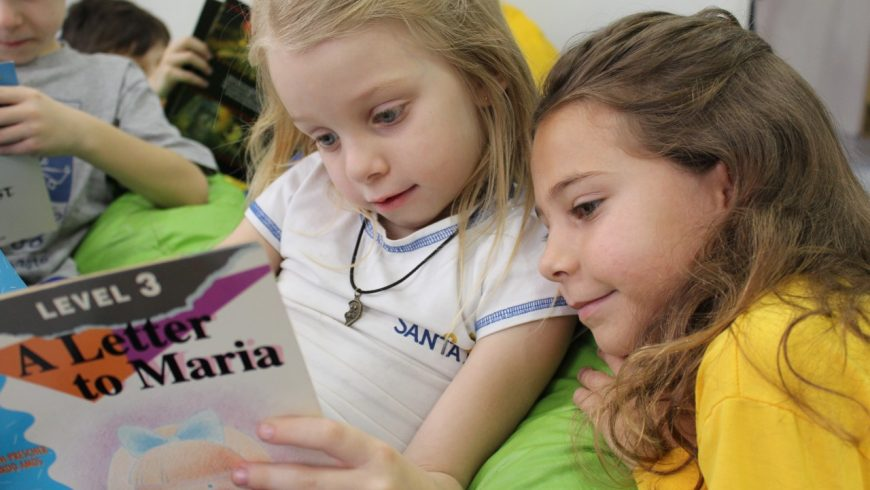
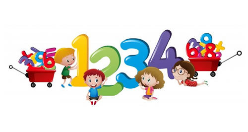
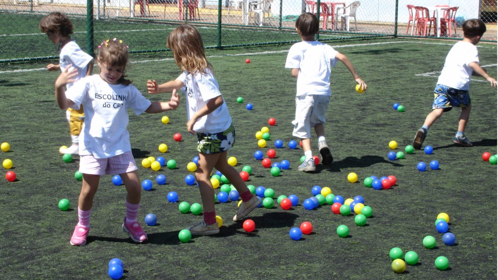
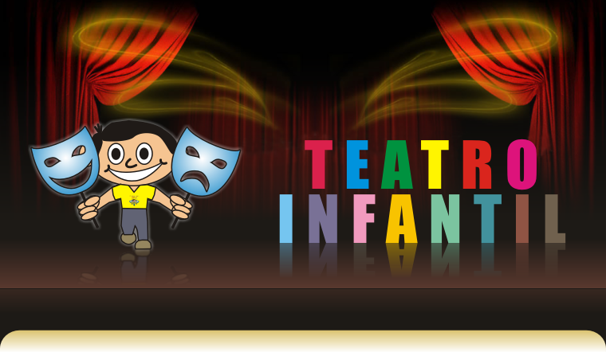

Quando o assunto é ensino do português, a escola é um dos fatores principal, porem quando a gente é criança, isso não parece ter muita importância para a vida, por isso, o ensino da língua portuguesa é tão essencial na formação escolar.

O conhecimento em outras línguas, principalmente a inglesa, é quase uma condição para seu sucesso dos seus filhos.

A primeira resposta para a questão é muito evidente: a melhor forma de despertar o gosto pela Matemática na Educação Infantil é brincando.

Atividades com pula corda, esponjas, sapos em fila, morto-vivo, corre cotia,etc. Essas são algumas das atividades relizadas nas aulas de educação fisíca.

O teatro pode ser usado para desenvolver as potencialidades das crianças e as preparando para a vida participando de praticas educativas.